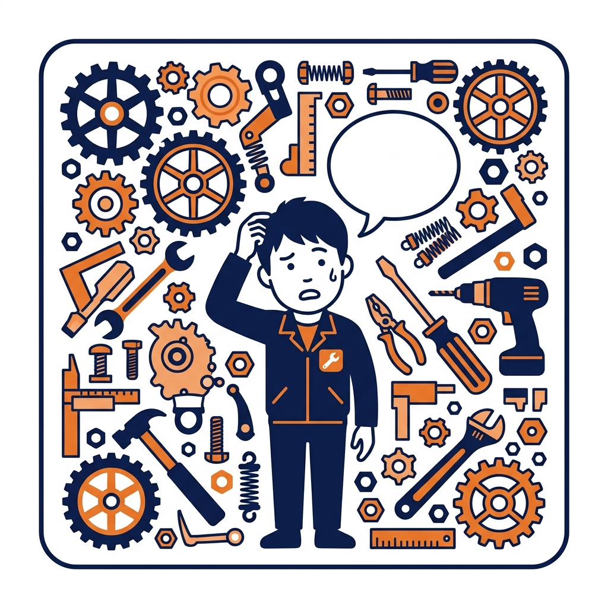
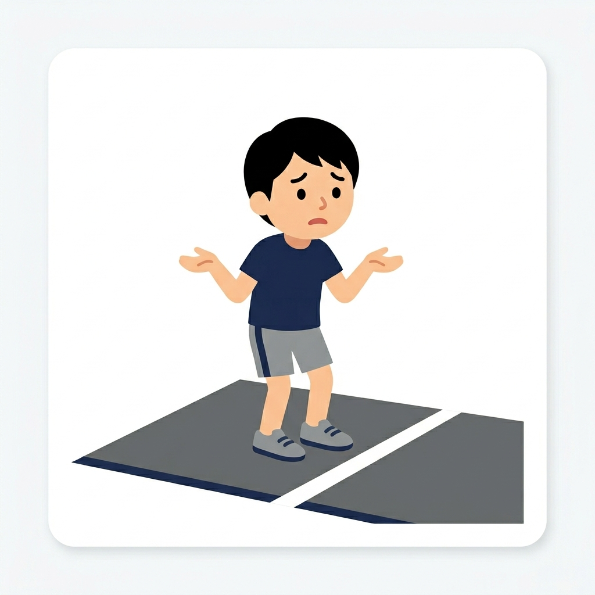
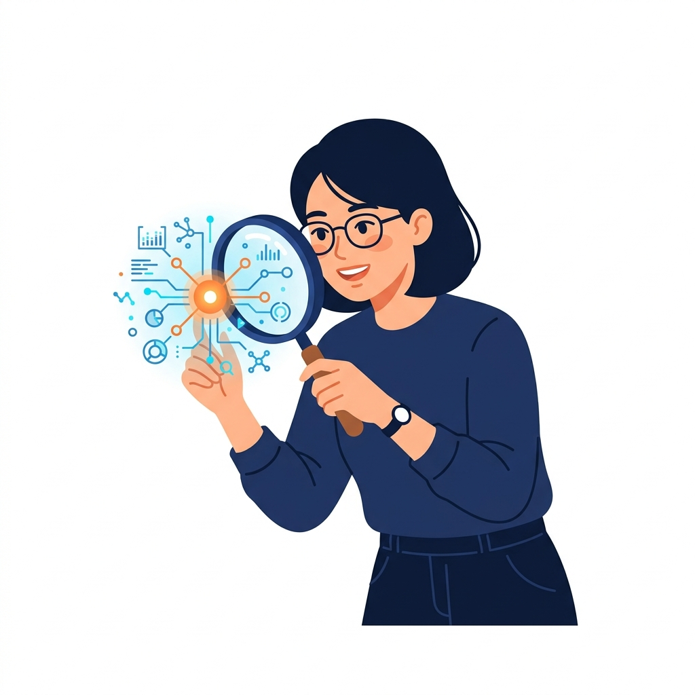
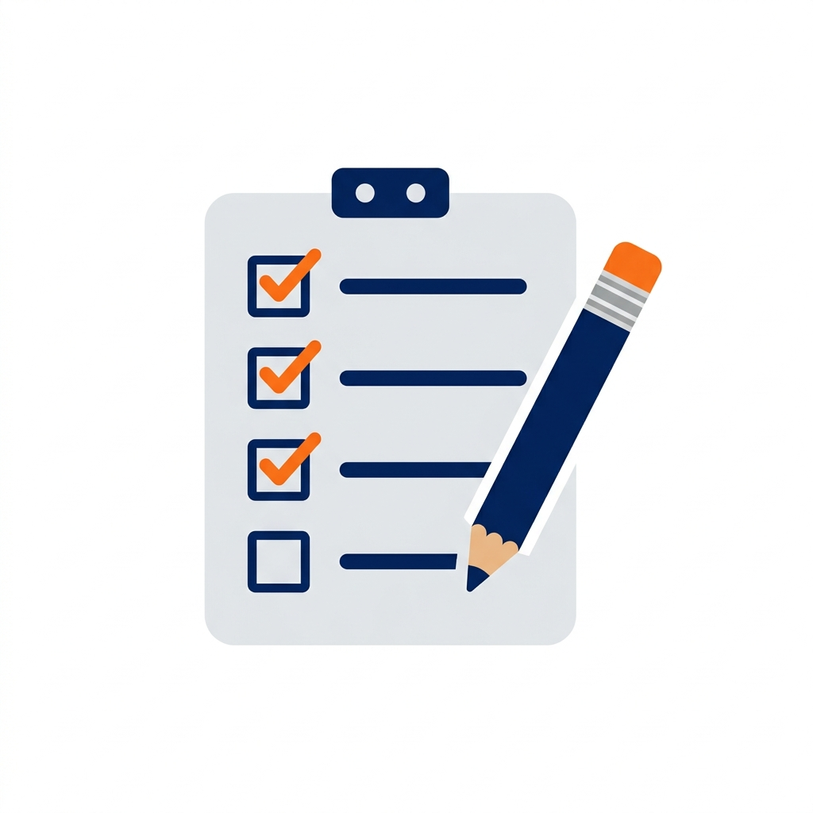
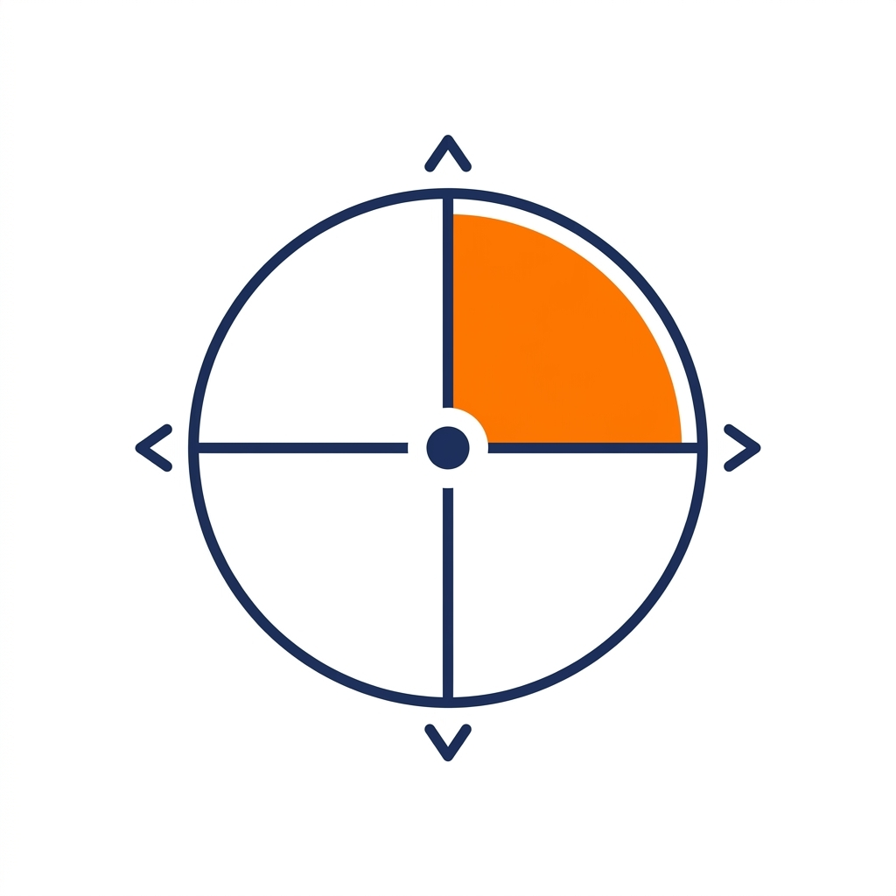

どちらもLINEで完結します。費用は一切かかりません。
AIを使いこなしたいのに、なぜかうまくいかない。その「なぜか」を知りたい人へ。
「なんとなく使えていない」を感覚のまま放置すると、何年経っても変わりません。原因を特定するのが先です。
AXIS 1｜言語化
自分の課題を
言葉にできるか
「何に困っているか」をAIに伝えられる状態かどうか。ここが整っていないと、どんなツールを使っても的外れな答えしか返ってこない。
AXIS 2｜特性理解
AIで何ができるかを
知っているか
AIの得意なこと・動かし方を知っているかどうか。知らないと、使えるはずの場面を毎回素通りしてしまう。
この2軸で、あなたはどのタイプ？

言語化× · 特性理解◯
問いが立てられないタイプ
AIの知識はある。でも何を聞けばいいかが見えない。
言語化◯ · 特性理解◯
整っているタイプ
すでに使いこなせている。次は人に伝える側へ。

言語化× · 特性理解×
スタートライン手前タイプ
何から始めればいいかもわからない。まずここから。

言語化◯ · 特性理解×
手探り使いタイプ
課題はわかる。でもAIで何ができるかが見えない。
診断後、結果の詳細はLINEで届きます
登録から結果まで、すべてLINEで完結します。
所要時間：30秒
LINEで友だち登録する
LINEアカウントに登録すると、すぐに診断がスタートします。
所要時間：1〜2分
6問に答える
「AIをどう使っているか」「どこで詰まっているか」を中心に、6問に答えます。選択式なので1〜2分あれば完了します。

即時
4タイプのどれかが届く
あなたのタイプと、使いこなせない理由が言語化された結果が届きます。

翌日から5日間
タイプ別の処方箋が届く
あなたのタイプに合った「最初の一歩」「深め方」が5日間かけてLINEで届きます。読むだけでOKです。
申し込む前に、まず話し方や雰囲気を確認してください。
▶ 動画をここに埋め込む（YouTubeまたはLoom）
※ URLが決まり次第差し替えます
タカハシケンタロー
髙橋健太郎
鹿児島を拠点に、経営者・個人事業主のAI活用支援をしています。鹿児島県商工会連合会のエキスパートとして、これまで100名以上の方と話してきました。
セッションやセミナーで一番多くいただく言葉は「自分が何に悩んでいたのか、初めてわかった」です。AIが使えないんじゃなくて、自分の課題をうまく言葉にする場がなかっただけ——そういう人がほとんどです。
この診断は、その「なぜ使いこなせないのか」を1〜2分で明らかにするために設計しました。
「まず話を聞いてほしい」「自分の状況を整理したい」という方は、診断を飛ばして相談から始めても大丈夫です。
日程調整ページに移動します